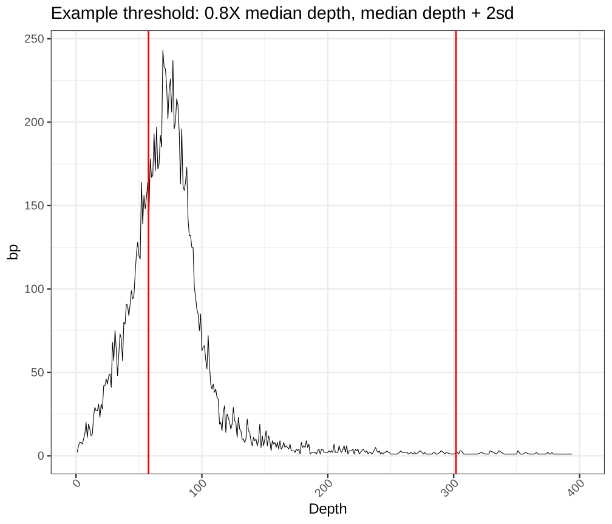
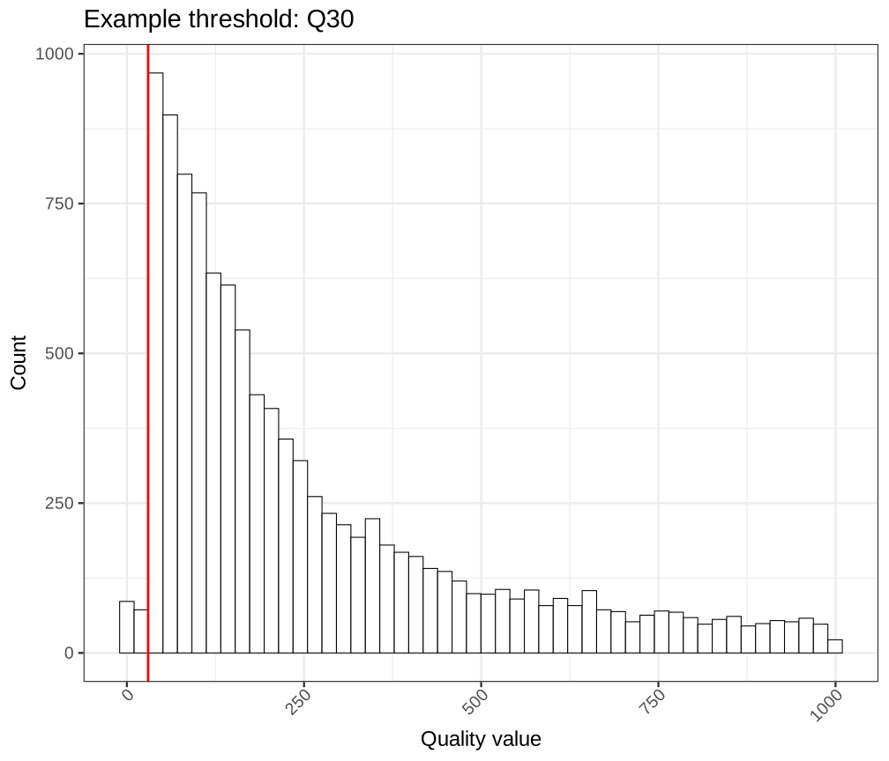
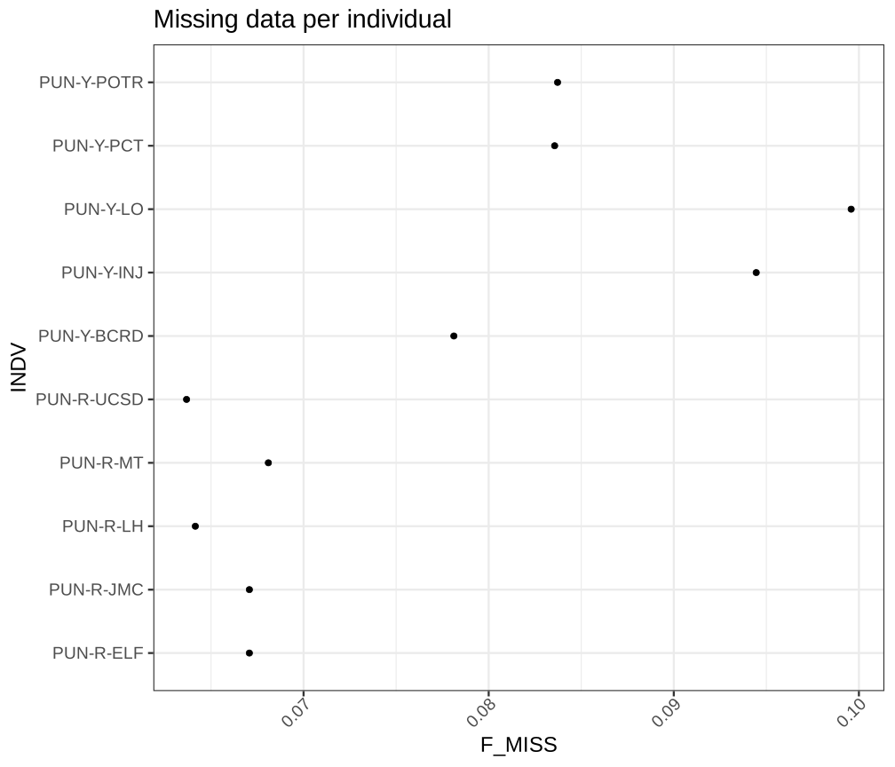
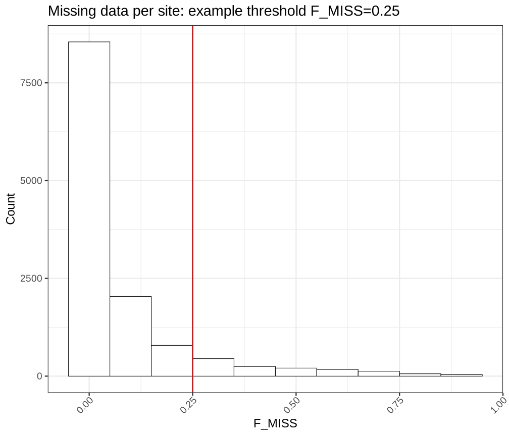
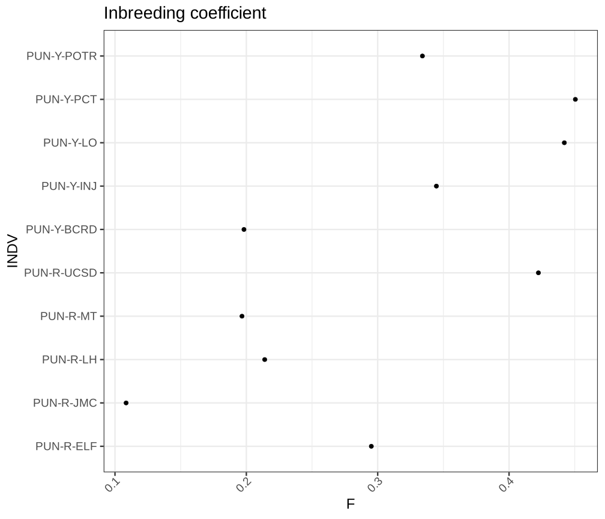

SN 0 number of samples: 10
SN 0 number of records: 12596
SN 0 number of no-ALTs: 0
SN 0 number of SNPs: 10429
SN 0 number of MNPs: 0
SN 0 number of indels: 2225
SN 0 number of others: 0
SN 0 number of multiallelic sites: 1011
SN 0 number of multiallelic SNP sites: 196Variant filtering
From raw variant calls to high-quality call sets
Per Unneberg
NBIS
09-Nov-2023
Variant filtering
Why we need to filter variants
Error rate of variant calls (SNPs and INDELs) largely unknown. Two major sources of error are
- erroneous realignment in low-complexity regions
- incomplete reference sequence
Li (2014)
Manual filtering sets thresholds on context statistics
| Category | Filter | Recommendation (examples) |
|---|---|---|
| General filters | Base quality | Recalibrate / <Q20 |
| Mapping quality | MAQ < 20 / improper pairs | |
| Minimum depth and/ or number of individuals | Varies; e.g. <50% individuals, <0.8X average depth | |
| Maximum depth | 1-2 sd above median depth | |
| Duplicate reads | Remove | |
| Indels | Realign reads / haplotype-based caller / exclude bases flanking indels | |
| Overlapping sections of paired-end reads | Soft-clip to avoid double-counting | |
| Filters on polymorphic sites | \(p\)-value | \(10^{-6}\) |
| SNPs with more than two alleles | Filter; methods often assume bi-allelic sites | |
| Minimum minor allele frequency (MAF) | 1%-10% for some analyses (PCA/admixture/LD/\(\mathsf{F_{ST}}\)) | |
| Restricting analysis to a predefined site list | List of global SNPs | Use global call set for analyses requiring shared sites |
Procedure
Look at annotations (context statistics) and set thresholds.
Example: filter all sites with MAF<1%
Guidelines? What guidelines?
GATK hard filters
However, because we want to help, we have formulated some generic recommendations that should at least provide a starting point for people to experiment with their data.
SNPs
QualByDepth (QD) < 2.0
RMSMappingQuality (MQ) < 40.0
FisherStrand (FS) > 60.0
StrandOddsRatio (SOR) > 3.0
MappingQualityRankSumTest (MQRankSum) < -12.5
ReadPosRankSumTest (ReadPosRankSum) < -8.0Indels
QualByDepth (QD) < 2.0
ReadPosRankSum (ReadPosRankSumTest) < -20.0
InbreedingCoeff < -0.8
FisherStrand (FS) > 200.0
StrandOddsRatio (SOR) > 10.0That said, you ABSOLUTELY SHOULD NOT expect to run these commands and be done with your analyses.
On RAD-seq filtering
… the effects of SNP filtering practices on population genetic inference have received much less attention
There Is No ‘Rule of Thumb’: Genomic Filter Settings for a Small Plant Population to Obtain Unbiased Gene Flow Estimates (Nazareno & Knowles, 2021)
What about machine learning?

DePristo et al. (2011)
Variant Quality Score Recalibration
Motivation: look at context statistics and integrate over multiple dimensions
- training data: subset of known variants (from validated resources, e.g. 1000 Genomes)
- compile multiple statistics (allele depth, read count, quality, …)
- fit Gaussian mixture model
- reassign quality scores to variant call set
Caveat: database of known variants often not known for non-model organisms.
Filtering VCF with variant sites
Monkeyflower variants
Use vcftools to compile data to generate summary statistics
Plot and select thresholds
Mean depth and variant quality distribution
Code
vcf <- "variantsites.vcf.gz"
system(paste("vcftools --gzvcf", vcf, "--site-depth 2>/dev/null"))
data <- read.table("out.ldepth", header = TRUE)
x <- as.data.frame(table(data$SUM_DEPTH))
lower <- 0.8 * median(data$SUM_DEPTH)
upper <- median(data$SUM_DEPTH) + 1 * sd(data$SUM_DEPTH)
xupper <- ceiling(upper/100) * 100
ggplot(x, aes(x = as.numeric(as.character(Var1)), y = Freq)) + geom_line() + xlab("Depth") +
ylab("bp") + xlim(0, xupper) + geom_vline(xintercept = lower, color = "red",
size = 1.3) + geom_vline(xintercept = upper, color = "red", size = 1.3) + ggtitle("Example threshold: 0.8X median depth, median depth + 2sd")
Depth uneven. High coverage often repetitive sequence. Too low coverage will bias SNP calling due to undersampling of alleles.
Code
system(paste("vcftools --gzvcf", vcf, "--site-quality 2>/dev/null"))
data <- read.table("out.lqual", header = TRUE)
ggplot(subset(data, QUAL < 1000), aes(x = QUAL)) + geom_histogram(fill = "white",
color = "black", bins = 50) + xlab("Quality value") + ylab("Count") + geom_vline(xintercept = 30,
color = "red", size = 1.3) + ggtitle("Example threshold: Q30")
Filter variants with too low quality (Q30=0.001% chance of being wrong)
Missing data per individual and site
Code

Missing number of sites per individual. Too many would indicate poor sample quality.
Code
system(paste("vcftools --gzvcf", vcf, "--missing-site 2>/dev/null"))
data <- read.table("out.lmiss", header = TRUE)
ggplot(data, aes(x = F_MISS)) + geom_histogram(fill = "white", color = "black", bins = 10) +
xlab("F_MISS") + ylab("Count") + geom_vline(xintercept = 0.25, color = "red",
size = 1.3) + ggtitle("Missing data per site: example threshold F_MISS=0.25")
Fraction missing calls per site. Could warrant separate filters when comparing populations (e.g., total missing 0.2, but population A has 0.1 missing, population B 0.4).
Minor allele frequency and heterozygosity
Code
system(paste("vcftools --gzvcf", vcf, "--freq2 --max-alleles 2 2>/dev/null"))
data <- read.table("out.frq", skip = 1)
colnames(data) <- c("CHROM", "POS", "N_ALLELES", "N_CHR", "FREQ1", "FREQ2")
data$MAF <- apply(data, 1, function(x) as.numeric(min(x[5], x[6])))
ggplot(data, aes(x = MAF)) + geom_histogram(fill = "white", color = "black", bins = 10) +
xlab("MAF") + ylab("Count") + geom_vline(xintercept = 0.1, color = "red", size = 1.3) +
ggtitle("Minor allele frequency: example threshold MAF=0.1")n=12; mutations 0, 4, 5 (red) are singletons and would fail MAF<=0.1
Reasonable cutoff 0.05-0.1 for PCA, population structure.
But! Statistics based on diversity or the SFS should not be filtered on MAF
Code

- F=0: Hardy-Weinberg Equilibrium
- F>0: deficit of heterozygotes; inbreeding, Wahlund effect (population substructure), allele dropout
- F<0: surplus of heterozygotes; could be sample contamination, poor sequence quality (mismapping)
Filtering VCF with invariant sites
Monkeyflower call set with invariant sites
SN 0 number of samples: 10
SN 0 number of records: 10174
SN 0 number of no-ALTs: 9341
SN 0 number of SNPs: 416
SN 0 number of MNPs: 0
SN 0 number of indels: 105
SN 0 number of others: 0
SN 0 number of multiallelic sites: 53
SN 0 number of multiallelic SNP sites: 11Filtering as before but excluding MAF, variant quality filters
Filtering on bam files
Motivation
Some organisms generate a lot of data…
Total variant file size: 7.4T!!!
Without invariant sites!
Solution: sequence masks
…it may be possible for more advanced users to achieve similar results with existing tools. For example, with the inclusion of a user-created “accessibility mask”, it should be possible to avoid the “missing sites” effect…
Spruce variant files, chromosome 1
48G PA_chr01_10.vcf.gz
45G PA_chr01_11.vcf.gz
51G PA_chr01_12.vcf.gz
50G PA_chr01_13.vcf.gz
45G PA_chr01_14.vcf.gz
51G PA_chr01_15.vcf.gz
51G PA_chr01_16.vcf.gz
35G PA_chr01_17.vcf.gz
49G PA_chr01_1.vcf.gz
50G PA_chr01_2.vcf.gz
52G PA_chr01_3.vcf.gz
51G PA_chr01_4.vcf.gz
54G PA_chr01_5.vcf.gz
51G PA_chr01_6.vcf.gz
37G PA_chr01_7.vcf.gz
51G PA_chr01_8.vcf.gz
47G PA_chr01_9.vcf.gzCoverage tracks and sequence masks
Coverage tracks and sequence masks
Coverage tracks and sequence masks
Coverage tracks and sequence masks
Coverage tracks and sequence masks

Coverage tracks and sequence masks
Coverage tracks and sequence masks
Coverage tracks and sequence masks

Filters and masks
Reference
Coverage mask>LG4 LG4:12000001-12100000
GGACAATTACCCCCTCCGTTATGTTTCAGTCAATTTCATGTTTGACTTTTAGATTTTTAA
000000000011111111110000000000000011111111111000000000000110Mask could also represent annotation features, such as exons, four-fold degenerate sites etc to be combined with coverage mask:
Reference
Coverage mask
Exons
Combined>LG4 LG4:12000001-12100000
GGACAATTACCCCCTCCGTTATGTTTCAGTCAATTTCATGTTTGACTTTTAGATTTTTAA
111111111100000000001111111111111100000000000111111111111001
111110000000000000000000000000111111111100000000001111111111
111111111100000000001111111111111111111100000111111111111111Use with vcftools --mask to restrict analyses to certain positions.
NB! Here 0 is a position that is unmasked, >0 masked
Bibliography
DePristo, M. A., Banks, E., Poplin, R., Garimella, K. V., Maguire, J. R., Hartl, C., Philippakis, A. A., del Angel, G., Rivas, M. A., Hanna, M., McKenna, A., Fennell, T. J., Kernytsky, A. M., Sivachenko, A. Y., Cibulskis, K., Gabriel, S. B., Altshuler, D., & Daly, M. J. (2011). A framework for variation discovery and genotyping using next-generation DNA sequencing data. Nature Genetics, 43(5), 491–498. https://doi.org/10.1038/ng.806
Korunes, K. L., & Samuk, K. (2021). Pixy: Unbiased estimation of nucleotide diversity and divergence in the presence of missing data. Molecular Ecology Resources, 21(4), 1359–1368. https://doi.org/10.1111/1755-0998.13326
Li, H. (2014). Toward better understanding of artifacts in variant calling from high-coverage samples. Bioinformatics, 30(20), 2843–2851. https://doi.org/10.1093/bioinformatics/btu356
Lou, R. N., Jacobs, A., Wilder, A. P., & Therkildsen, N. O. (2021). A beginner’s guide to low-coverage whole genome sequencing for population genomics. Molecular Ecology, 30(23), 5966–5993. https://doi.org/10.1111/mec.16077
Nazareno, A. G., & Knowles, L. L. (2021). There Is No “Rule of Thumb”: Genomic Filter Settings for a Small Plant Population to Obtain Unbiased Gene Flow Estimates. Frontiers in Plant Science, 12. https://www.frontiersin.org/articles/10.3389/fpls.2021.677009
Talla, V., Soler, L., Kawakami, T., Dincă, V., Vila, R., Friberg, M., Wiklund, C., & Backström, N. (2019). Dissecting the Effects of Selection and Mutation on Genetic Diversity in Three Wood White (Leptidea) Butterfly Species. Genome Biology and Evolution, 11(10), 2875–2886. https://doi.org/10.1093/gbe/evz212
Variant filtering